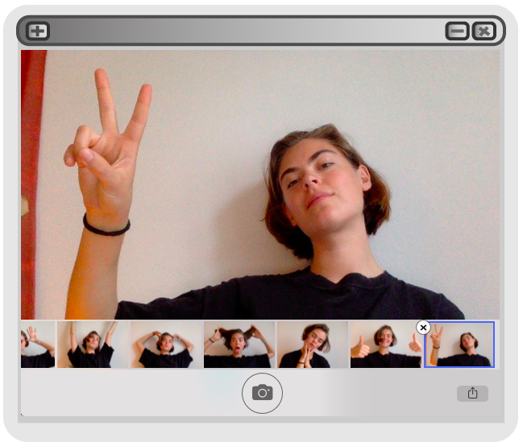

Om mig
På 5 sekunder
Skaber-trængene sjæl med massere at byde på. MMD er nyt for mig, men jeg har altid været tiltrukket af det kreative, om det er teater, film, maling eller keramik.
På 30 sekunder
Her skriver jeg så en længere tekst om mig når jeg får lyst til at forfatte. loren ipsum loren ipsum amet yeah yeah yeah loren ipsum loren ipsum amet yeah yeah yeah loren ipsum loren ipsum amet yeah yeah yeah loren ipsum loren ipsum amet yeah yeah yeah loren ipsum loren ipsum amet yeah yeah yeah loren ipsum loren ipsum amet yeah yeah yeah lorem lorem lorem lorem lorem lorem lorem lorem lorem lorem lorem lorem lorem lorem lorem lorem lorem lorem lorem lorem
her forneden er nogle ting jeg har lavet for nyligt: